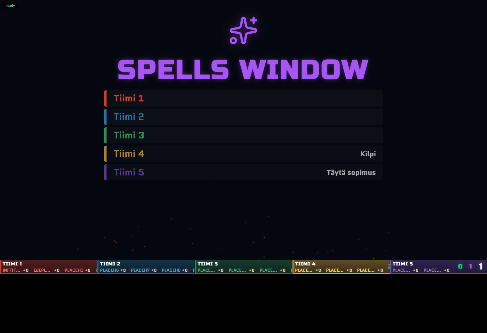

full/ (TODO.md + EVENT_BUG_REPORTS.md) before general polish. Updated as rounds complete.Challenge matches never had a slotChannels['challenge'] entry, so every Discord move silently failed. Two competing fixes built in isolated worktrees; critic blind-picked the winner (near-identical fixes, winner reused the shared test fixture instead of duplicating it). Merged, 15/15 tests pass. Existing tournaments without a challenge key degrade gracefully (no throw).
"Current Match", "Upcoming Matches" and "Recent Events" showed every team's matches, not just the viewer's. Winner reused the existing _matchInvolvesUs() helper and added a stricter analogous helper for history events. Known edge case: a gameHistory entry with no player IDs at all falls back to "show unscoped" (same permissive default the existing helper already used) — flagged for a live spot-check, not a regression.
Both independent builders investigated and found this was already resolved by an earlier commit (7831e1b) — navbar.js and profile.html both already derive the label from isPlayer === true, set at team-assignment time. No code change made.
Independent reviewer checked both merged fixes together: no shared code paths, no interaction, both match existing file conventions, both degrade gracefully for pre-existing tournament data.
The challenge-hex picker was a raw-coordinate dropdown ("Side Heart (q2r-4) — Tiimi 2"). Winner adds a "Pick on Board" mode: hides the challenge modal, highlights eligible heart hexes on the live board, click writes into the same #challengeHexSelect field the dropdown already used (kept as fallback). Winner correctly reapplies highlight classes after every board re-render — needed because a live Firestore update rebuilds all hex DOM elements from scratch, which would otherwise silently drop the highlight mid-pick during a live event.
Both independent builders found this already fully built on main (phase-manager.js's spell_window_1..4, display-manager.js's _renderSpellWindowSlide(), same full-screen-takeover mechanism as BREAK). Confirmed with a real screenshot below via the dev-preview harness at 1920×1080.

Bulk-generate modal: paste N player names (or leave blank for N unlabeled codes), get back one labeled code per name, copied together. Winner correctly pre-labels via the existing assignedName field; the losing candidate had used assignedTo, which is UID-typed and checked by firestore.rules against request.auth.uid — would have been a real schema-semantics bug. Also added "Copy All Unused URLs."
Independent reviewer confirmed both merged features are correct in isolation and don't interact (disjoint files/collections). Verified the P4 highlight-reapplication claim by tracing renderBoard()'s call path from Firestore's onSnapshot down. Verified P6 never touches the UID-typed assignedTo field.
Surfaced an unrelated pre-existing bug while checking: login.html's registration write sets 5 fields on a referralCodes doc, but firestore.rules restricts the diff to just 2 (used, assignedTo) — if the real (non-temp) ruleset is deployed, marking a code used at registration may fail. Logged to TODO.md; not fixed this round (needs the user's call on which ruleset is actually live, an open question that predates this pass).
New full/season-stats.html aggregates team standings across every tournament linked to a season. Since teams have no persistent id across tournaments, matching is by team name — winner explicitly guards against merging two different teams that share a name within the same tournament (kept as separate rows + a warning banner); the losing candidate silently summed them, a real correctness bug the critic caught by reading both aggregation implementations directly.
Not usable live: the seasons/{id} Firestore collection has no rule block at all — default-deny. Fix is documented (exact rule block) in docs/architecture/firestore-rules.md §4b if this is ever picked back up, but the user has decided to skip the rules deploy indefinitely.
Built setupTapToSelect() in admin.js — event-delegated, takes an external AbortController signal (plugs into the existing per-render cleanup lifecycle), an isValidTarget guard for asymmetric source/target validity. Applied to the seating-order modal: tap a seat to arm it, tap another to swap (via the same swapSeatingPositions() the native drag-and-drop already uses). Native HTML5 drag-and-drop is untouched and still fully works — both paths coexist. Also scoped a new iPad-landscape (901-1194px) CSS breakpoint.
First-pass critic (pre-harsh-critic-policy) flagged 2 real gaps: armed state didn't cancel on an outside-container click (e.g. modal close button), and the new media query lacked a min-width, relying on cascade order. Both fixed in a dedicated fix round; a genuinely adversarial critic traced the actual DOM/event order (container's own handler fires and clears state before the new outside-click listener could ever see a valid tap) and reported clean — zero remaining gaps.
Team/player assignment, match-side drop zones, queue reordering — using P8's now-proven setupTapToSelect() pattern, with the same harsh-critic + fix-until-clean process per site.
Concurrency and the bipartite-split resolution mechanic are decided (see TODO.md 2026-08-09 entries), but the odd-cycle validation policy and the "challenge filler game" scope are explicitly not fully thought out yet per your own notes — implementing this now would mean a swarm guessing at open game-design questions in a live-tournament system. Recommend scoping this one with you directly before building.